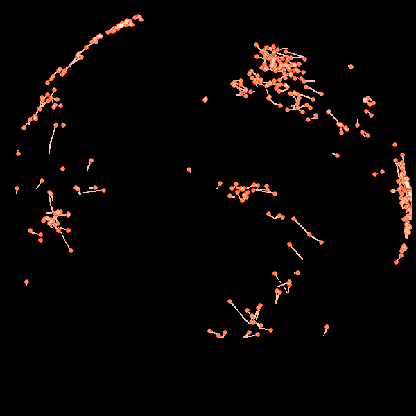

Network maps
To install the package:
devtools::install_github("leonawicz/mapmate")The save_map function in the mapmate package offers the type="network" map type. This type of map displays networks or pathways defined by overlapping segments traversing along great circle arcs. This map type can be used to display arbitrary line segments as well if such data is provided, but the provided helper functions used here are aimed specifically at drawing great circles.
Obtain great circle arc endpoints
The first example uses a flat map. Therefore it is important to break lines at the international dateline when preparing the data. In the second example, lines cross the dateline are not split because the segments will be plotted on the globe.
First, begin with the network data set provided in mapmate is a simple data frame of lon/lat locations of various cities and corresponding weights related to population sizes. It must be expanded to a larger, more complex data frame that contains location pairs and, optionally, distances between locations in each pair. gc_endpoints assists with this by simulating some pairs. The resulting data frame contains endpoints of lines that are defined subsequently.
library(mapmate)
library(dplyr)
set.seed(192)
data(network)
network
distFun <- function(x) 1 - x/max(x) # simple inverse distance weighting
endpoints <- gc_endpoints(network, "lon", "lat")
endpointsObtain great circle arcs
Next, we sample based on a combination of weights. This is an arbitrary and optional step. The example is given primarily to make the data set used in these examples smaller in size. More importantly, the gc_arcs helper function is used to further expand the endpoints data frame to one containing sequences of points describing great circle arcs instead of only their endpoints.
The default number of points added between the endpoints of each great circle arc is n=50, but this can be changed and can also differ for each arc (e.g., based on distance between points). As noted, arcs are filled out planning for use with both flat maps and a globes. A group column is used to identify distinct arcs for plotting.
# take a weighted sample, e.g., favoring larger averaged populations and
# shorter distances
endpoints <- mutate(endpoints, Dist_wts = distFun(Dist))
endpoints <- sample_n(endpoints, 500, replace = TRUE, weight = (Pop_wts0 + Pop_wts1)/2 +
Dist_wts)
# expand data frame from endpoints to arcs, each composed of a sequence of
# points
arcs_flat <- gc_arcs(endpoints, "lon0", "lat0", "lon1", "lat1", breakAtDateLine = TRUE)
arcs_globe <- gc_arcs(endpoints, "lon0", "lat0", "lon1", "lat1")
arcs_globeObtain great circle arc path sequences
Finally, gc_paths is used to further expand the great circle arcs data frame into one that contains sequences of ordered segments along each arc. The segments can vary in length between distinct arcs and can overlap one another within an arc. The group argument is required to identify distinct arcs in the input data frame. size is required to set an upper limit on the number of points constituting an arc segment; the actual length of the segments is chosen randomly and uniformly between 2 and size. Other arguments are optional.
Flat map network animation
The direction of arc traversal can also be controlled by the direction argument if desired. This is useful for simulations if the input data are not yet randomized or if the directions simply need to be reversed. First some setup:
n <- max(paths_flat$id)
png.args <- list(width = 600, height = 300, bg = "black")
clrs <- c("#1E90FF50", "#FFFFFF50", "#FFFFFF", "#1E90FF75")
ylm <- range(paths_flat$lat) # trimming empty southern map regionTypically, I would leave the default arguments save.plot=TRUE and return.plot=FALSE, but here they are reversed for the purposes of the example. This returns a list of ggplot objects rather than saving png files. Note that I still included the png.args argument even though width and height will be discarded because save_map will take the background color specified by bg intended for png files and use it in the ggplot2 theme applied to the returned plots.
The default background is transparent so I need to include this here since I have changed it to black. I have changed it to black in this example because I am making a reproducible gif for simplicity rather than doing any layering of separate image sequences in a video editor. Below, saveGIF from the animation package is used to make a simple gif from the plot sequence produced by save_map by looping over the list of returned plots.
In summary, this is all a somewhat convoluted scenario to show you a short animated gif representing plots made by save_map. The intended use case for save_map is to simply export the sequence of png files and the user can do whatever they wish with those files subsequently. If literally all you want to do is make a short, simple animated gif of custom plots using a small amount of data, just use the animation package. You do not need mapmate for that. Also, if you are using animation in general, as with the code below, it is dependent on ImageMagick, which you will also have to install.
gglist <- save_seq(paths_flat, id = "id", n.frames = n, ortho = FALSE, type = "network",
ylim = ylm, png.args = png.args, save.plot = FALSE, return.plot = TRUE)
library(animation)
# you may need to specify a different path on your Windows machine you may
# also need to ensure convert.exe is part of your particular installation
ani.options(convert = "C:/Progra~1/ImageMagick-7.0.6-Q16/convert.exe")
saveGIF({
for (i in seq_along(gglist)) print(gglist[[i]])
}, "network2D.gif", interval = 1/20, ani.width = 960, ani.height = 480)

This animation-dependent example and the animated gif are not meant to be distractions from the purpose of this package. Despite the example gif, any code here related to animation is beyond the scope of this tutorial. If you have trouble running it, see the animation documentation and just do the following example instead, which is the way mapmate is meant to be used:
save_seq(paths_flat, id = "id", n.frames = n, ortho = FALSE, type = "network",
file = "network2D", png.args = png.args)
# Next, do whatever you want with the files, such as import them to a video
# editing programGlobe network animation
Here is an example plotting network paths along great circle arcs on the globe. Remember that we use the other data set, which was generated with the default breakAtDateline=FALSE in gc_arcs. As a side note, if you redo the above example for flat maps using the unbroken data, paths_globe, you will see why the arc segments are handled differently when preparing data for flat maps vs. for globes.
n <- max(paths_globe$id)
png.args <- list(width = 600, height = 600, bg = "black")
clrs <- c("#FFFFFF", "#FF450050", "#FF4500", "#FFFFFF50")gglist <- save_seq(paths_globe, id = "id", n.frames = n, col = clrs, type = "network",
pt.size = c(1, 1, 3, 2), png.args = png.args, save.plot = FALSE, return.plot = TRUE)
library(animation)
ani.options(convert = "C:/Progra~1/ImageMagick-7.0.3-Q16/convert.exe")
saveGIF({
for (i in seq_along(gglist)) print(gglist[[i]])
}, "network3D.gif", interval = 1/20, ani.width = 600, ani.height = 600)
Again, normal usage is to just do the following and then use the saved still image sequence with full user control for whatever you like:
save_seq(paths_globe, id = "id", n.frames = n, col = clrs, type = "network",
pt.size = c(1, 1, 3, 2), file = "network3D", png.args = png.args)